Retrato cercano
Más humano, reconocible y apropiado para una marca personal.
El rostro crea reconocimiento; el banner explica la promesa del canal. El monograma queda como sello para vídeos, overlays e intros.
Arquitectura, agentes, gobernanza y ROI desde la experiencia real.
Más humano, reconocible y apropiado para una marca personal.
Mejor como watermark, firma visual, intro y lower third.
La versión editorial es la recomendada. La variante con retrato se conserva para comparar o para campañas puntuales.

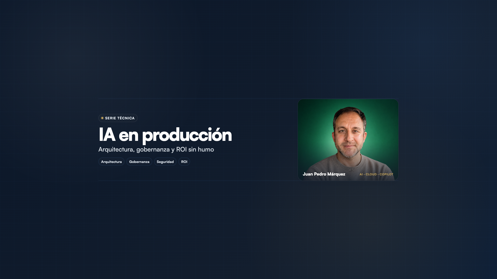
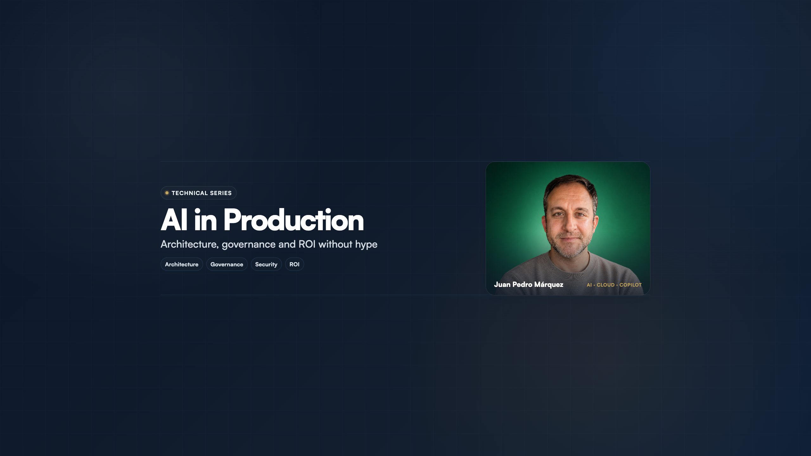

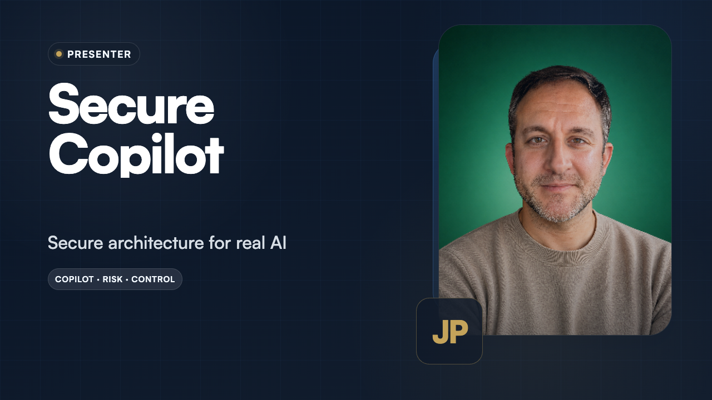
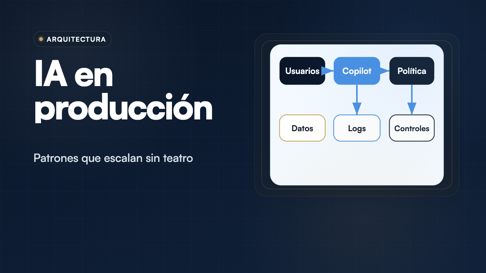


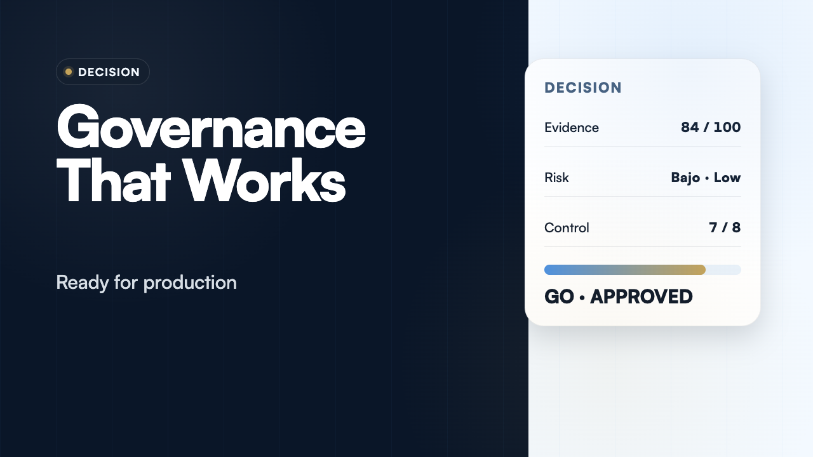
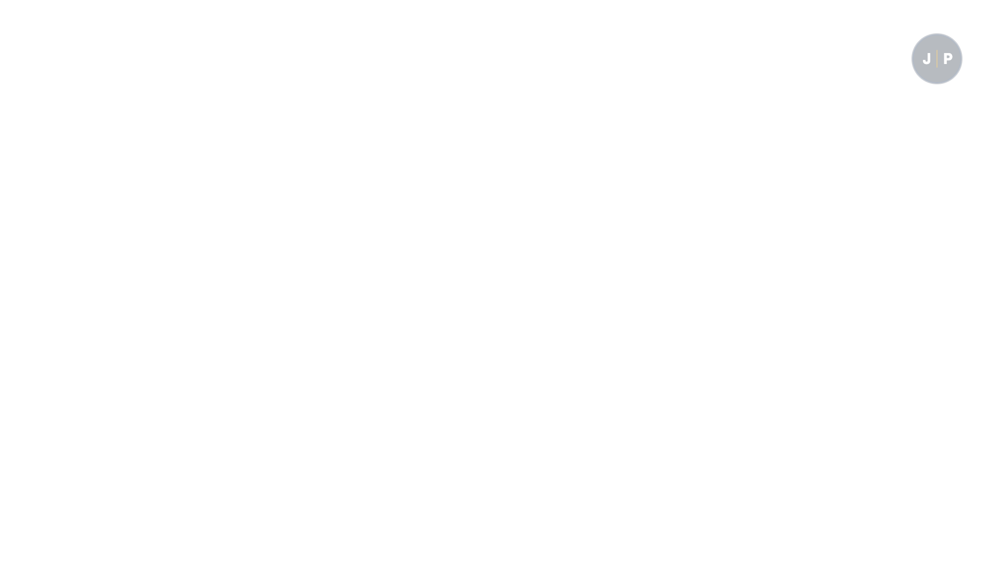
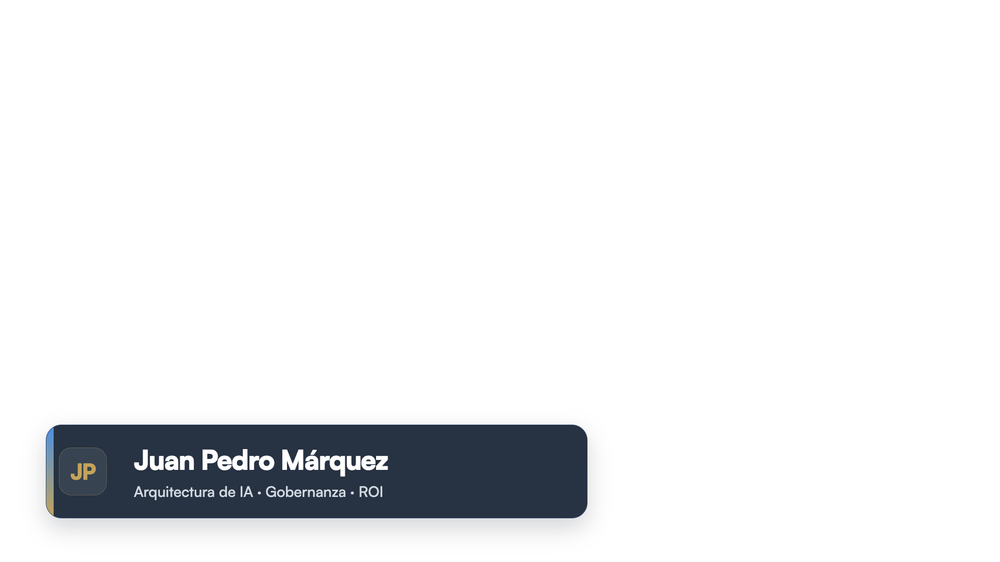

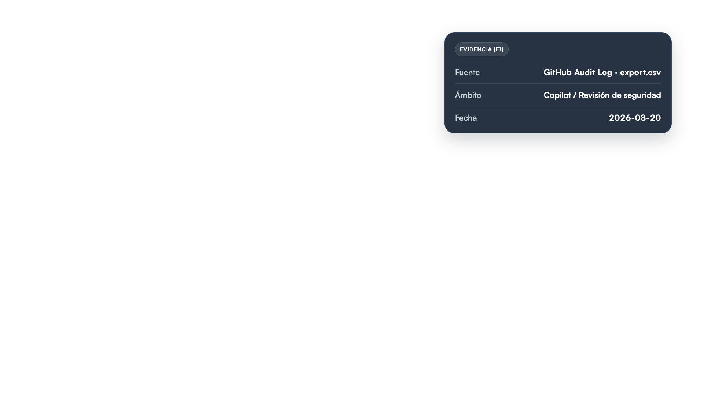

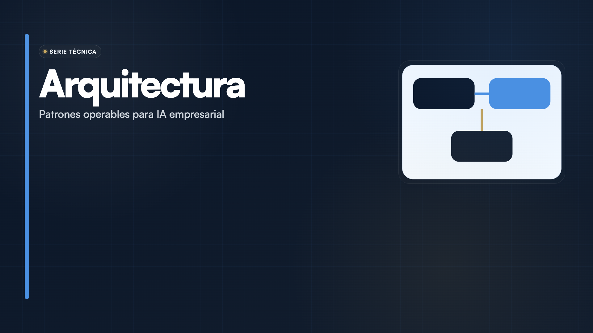

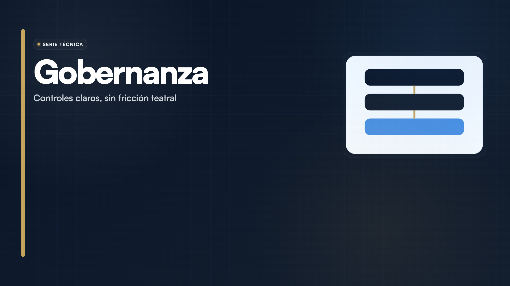

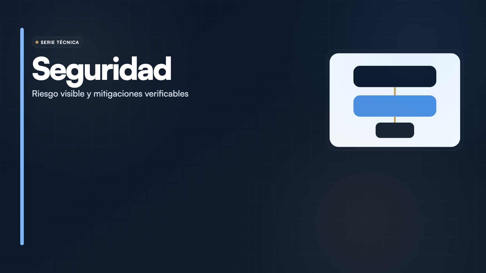

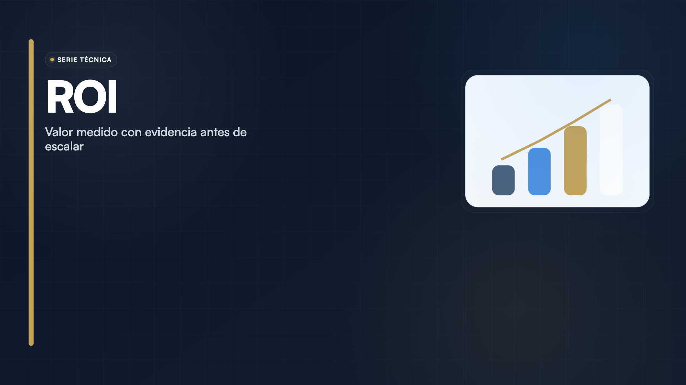

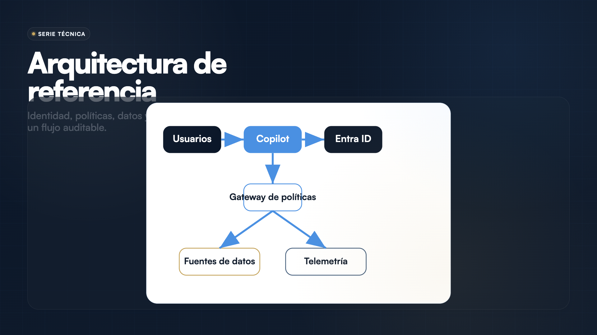

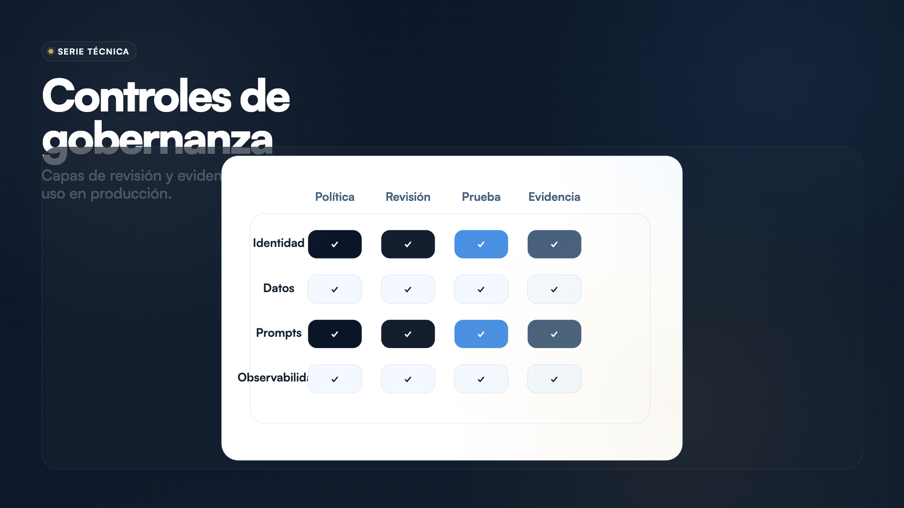

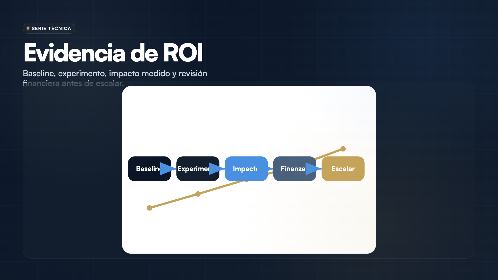

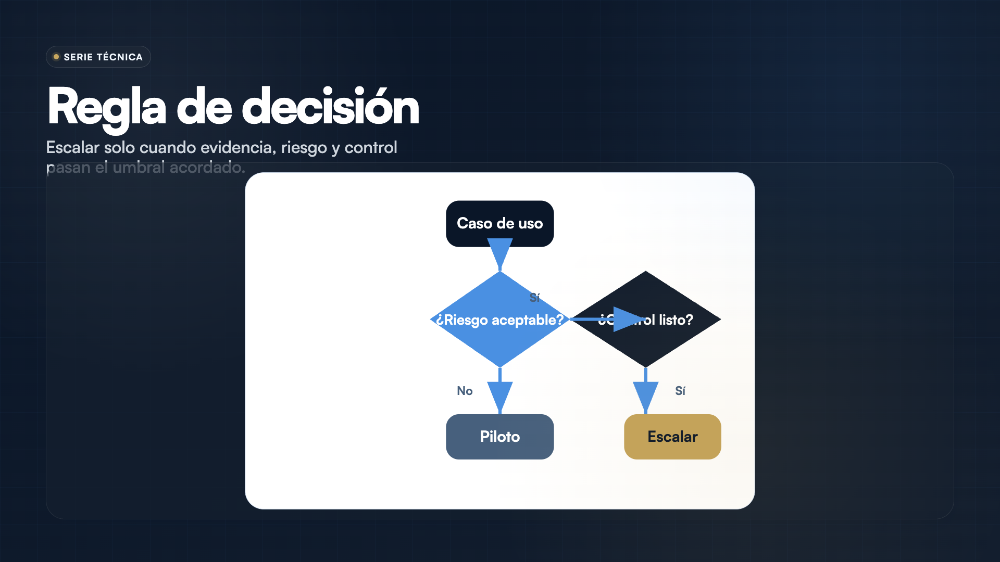

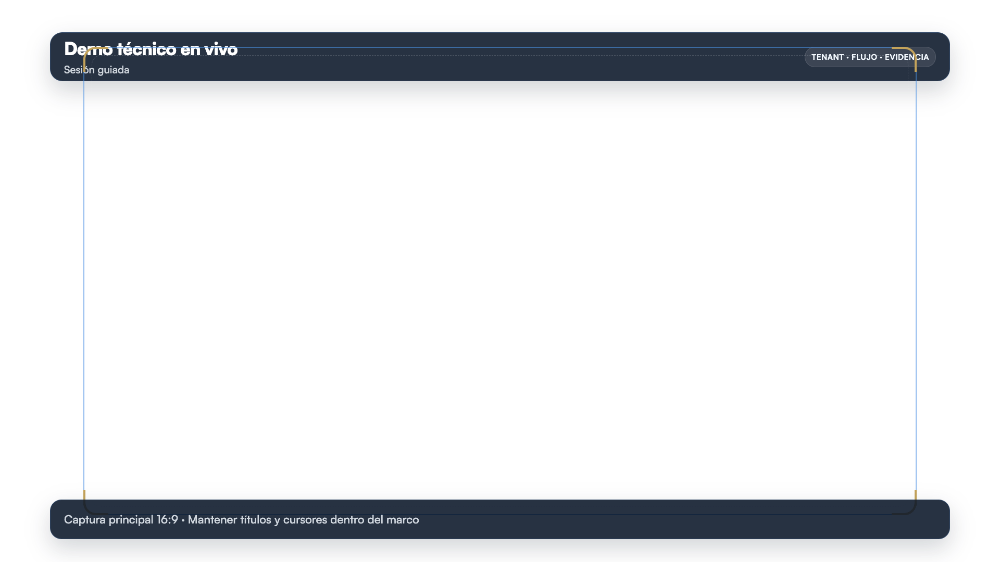